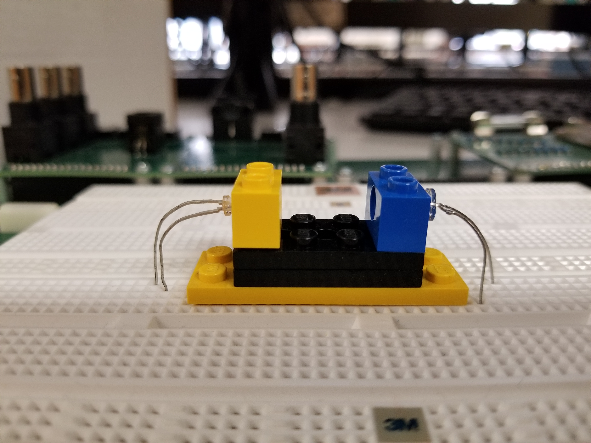

Experiment 6.1
Transducer Amplifiers
Equipment
- Test board
- Red LED
- Photodiode
- Lego pieces (2) 1x2 beams, (2) 2x4 pieces
- 3 LM741 opamps
- 100\(\Omega\), 10\(\Omega\), 1.5\(k\Omega\), 2 100\(k\Omega\), 2.2\(k\Omega\)
Transducers are devices that convert a physical quantity into an electric signal, or vice versa. Photodiodes and LEDs belong to the class of transducers. We tried connecting these devices directly to our measuring instruments in Experiments 1.2 and 2.4 with less than ideal results. The reason for this is their performance is based on current rather than voltage or resistance. We don't have current sources available to drive the LED and our current measuring equipment is not sensitive enough to produce useful readings from the photodiode.
In this Experiment, we will use op-amps to produce a pair of hybrid amplifiers. One is an amplifier which accepts a current as an input and produces a voltage as an output. Quantitatively we can express this as \(v_{out}=R_mi_{in}\) where \(R_m\) is the gain of the amplifier. \(R_m\) is called the mutual resistance or more commonly transresistance (short for "transfer resistance"). Similarly a transconductance amplifier will convert an input voltage \(v_{in}\) to an output current \(i_{out}\).
There is a variety of applications for either a transresistance amplified photodiode or a transconductance amplified LED. A further set of applications is opened up by combining the two into an emitter-detector pair. We saw one such application in Lab 2 where we built a miniature optical communication system using an LED as a transmitter and a photodiode as the receiver. In a communication system we want to maximize the achievable distance between transmitter and receiver and our main concern about the space between them is that it cause as little attenuation to the transmitted signal as possible.
Today we will provide additional circuitry to improve the linearity and sensitivity of the resulting emitter-detector pair.
Part A: An Emitter-Detector Pair
For a communication system, portability of the transmitter and receiver is important. However, many of the measurement systems based on optical emitter-detector pairs require a precisely fixed distance between the transmitter and receiver. Our first step will be to build the mechanical structure to house our emitter and detector.
We will use Legos to create our mechanical structure (see figure below for final structure). Use the 1x2 beam to mount the photodiodes and LEDs. We will be using a high-brightness red LED in this experiment.
-
Press the LED into the hole in a 1x2 beam, and the photodiode into another 1x2 beam.
Tip
If the photodiode is a bit too small to fit into the Lego hole, cut a strip of paper and wrap around the photodiode before inserting into the block.
-
For convenience we will mount the entire assembly on the breadboard, so use a 2x4 plate as the base and use 1x2 plates for vertical height.
-
Bend the leads of the photodiode and LED downward so they will fit into the breadboard. Position the assembly in the center of the breadboard with the LED on the left and plug in the leads.

We now have an optical path, of length approximately equal to three times the basic Lego pitch, with an LED at one end and a photodiode at the other. This will be our basic apparatus for transmission measurements.
Part B: Photodiode Amplifier
The inverting op-amp circuit works by taking the current that flows into the "virtual ground" at the inverting input and forcing it to flow in the feedback resistor. Since the voltage across \(R_F\) is equal to \(R_F I_F\) , the output voltage (on the other terminal of \(R_F\) ) is proportional to the current flowing into the virtual ground. What if instead of this current originating from the voltage across \(R_1\) , it instead came directly from a current source? Well, the output voltage would still be proportional to it: \(v_{out} = -R_F I_F = -R_F I_{in}\) I.e. we have an amplifier which accepts a current as an input and produces a voltage as an output. This is called a transresistance amplifier. (Since a resistance converts its current to a voltage (\(v=Ri\) ), a transresistance converts a current in one part of the circuit to a voltage in another.)
-
Wire up the photodiode amplifier shown above near the photodiode. Leave enough space to the right of this circuit for an additional op-amp.
-
Turn on the under-shelf florescent lamp and monitor \(v_{out}\) with the oscilloscope. You should see a DC value with a significant amount of 120 Hz ripple. Take a screenshot.
Part C: LED Driver
If we drive the LED directly from the function generator (as we did in Lab 2)
the resulting optical signal is badly distorted since the LED only conducts on
the positive half-cycle of the waveform. We can fix this problem by using the
OFFSET control to add a DC bias to the signal. If the bias is greater than
the amplitude of the AC component, the signal is always positive and the LED
will always conduct. However, there is still some distortion due to the
exponential i-v relationship of the diode. Since the brightness of the LED is
proportional to current and our signal sources put out voltages, we need a
voltage-in, current-out or transconductance amplifier.
Some background before constructing: the simplest way to get a transconductance amplifier out of our basic inverting amplifier configuration is to replace the feedback resistor with the element whose current we wish to control, in this case the LED:

To get the offset we need to avoid clipping, we can add a second input and connect it to one of the power supplies. In this case, to forward bias the diode, we must connect it to the negative (-15 V) supply.
Thirdly, we would like to be able to monitor the current in the LED. To do this we simply add a current sensing resistor in series.
Putting this all together we get the following:
-
Wire the circuit as shown above to the left of the LED in the emitter-detector pair.
-
Set the function generator to produce a 1 V p-p, 1 Hz square wave and connect it to \(v_{drive}\) . The LED should get brighter and dimmer, but never be completely extinguished.
-
While observing both \(v_1\) and the photodiode amplifier output on the oscilloscope, determine the maximum value \(v_{drive}\) can have before distortion occurs.
-
Analyze the above circuit and determine the relationship between \(v_{drive}\) and \(i_{LED}\). What is the quiescent current in the LED (i.e. with no input signal)?
Part D: More Gain for the Photodiode
With nothing but air between the LED and the photodiode, our photodiode amplifier gives a satisfactory output. However if we want to be able to measure objects with high optical density, we will need more sensitivity. Since the output voltage is determined by the product of the photodiode current and \(R_F\), we can get more output for the same input simply by increasing \(R_F\).
We could increase the gain by a factor of 100, by replacing \(R_F\) with 10 MΩ; however, there are a couple of reasons not to do it that way. One is that putting too much gain in a single stage can lead to problems, including reduced bandwidth. Another is that this would amplify the DC component of the signal (due to ambient light) by the same amount as our (much smaller) LED signal. This could cause the amplifier to saturate (clip), causing complete loss of the desired signal. Adding a second stage, with a DC blocking capacitor between the stages, eliminates both of these objections.

-
Add additional components to your existing photodiode amplifier to produce the circuit above. The additional circuitry should be placed directly to the right of the original photodiode amplifier that you built in Part B.
-
Observe \(v_{photo2}\) with the oscilloscope. You should see the 120 Hz ripple due to the ambient flourescent lighting. With the scope set to DC, there should be no significant offset voltage.
-
Ignoring the effect of the capacitor, what is the total transresistance gain ( \(v_{photo2}/i_d\) ) for this circuit? Don't disassemble the photodiode amplifier or LED driver circuits. We will be using them in future labs.